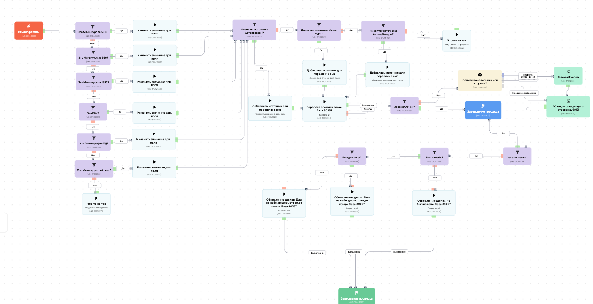

[АМО] Воронка лидорубов и диагностов неоплаченные
- ID процесса:
2136785 - Объект: Заказы
- Статус: Не запущен
- Внутренняя страница: 2136785. [АМО] Воронка лидорубов и диагностов неоплаченные
- GetCourse: Карточка | Схема процесса
Скриншоты процесса


Коротко для заказчика
- Главное: В процесс попадают заказы по правилу: С тегом (ID: 1438562) и С тегом (ID: 1640675) или С тегом (ID: 1624900) и Сумма и Дата создания (дата: 15.02.2025 - ...) или Дата создания (дата: 30.04.2025 - ...) и Предложение (ID: 6174702) и С тегом (ID: 1640675) или Предложение (ID: 6583298, 6901758, 7122427).
- Дальше он передает данные как: Оплаты и заказы, Пользователи и визиты.
- Связанных баз Vakas: 1.
Понятное описание процесса
- Процесс работает с объектом GetCourse: Заказы. Текущий статус процесса: Не запущен.
- На вход попадают данные так: В процесс попадают заказы по правилу: С тегом (ID: 1438562) и С тегом (ID: 1640675) или С тегом (ID: 1624900) и Сумма и Дата создания (дата: 15.02.2025 - ...) или Дата создания (дата: 30.04.2025 - ...) и Предложение (ID: 6174702) и С тегом (ID: 1640675) или Предложение (ID: 6583298, 6901758, 7122427).
- Внутри схемы есть дополнительные проверки/ожидания: 13. Основные блоки: «Это Мини-курс за 590?»; «Это Мини-курс за 990?»; «Это Мини-курс за 1590?»; «Заказ оплачен?»; «Это КФИ?»; «Был на вебе?».
- Дальше процесс делает прямые вызовы Vakas: 2. Напрямую задействованы базы: 80257.
- Передача: 80257. Воронка лидорубов и диагностов неоплаченные: Оплаты и заказы. Передаются параметры:
number,id,order_id,positions,costMoney,leftCostMoney,payedMoney,status,paymentLink,firstNameи другие. - Передача: 80257. Воронка лидорубов и диагностов неоплаченные: Пользователи и визиты. Передаются параметры:
name,email,phone,getcourse_user_id,komment_from_autoveb_for_amo,finished,vizit_vebinar,view_date_data,webinarId,bil_minut. - Что происходит в amoCRM: На входе в этап ЛИДОРУБЫ(Обновленная) -> Новая заявка [77270774] база ищет дубль и может взять старую сделку только из заранее разрешенных этапов. На входе в этап ЛИДОРУБЫ(Обновленная) -> 1 группа [77270782] база ищет дубль и при необходимости переводит найденную сделку в рабочий этап.
Ход процесса в GetCourse
- Схема состоит из 42 блоков и 65 переходов.
- По типам: стартов 1, условий/ожиданий 13, вызовов URL 2, изменений полей 8, финалов 2.
Блоки процесса: что делают и зачем нужны:
- Блок
37042552«Начало работы» (старт). Что делает: Запускает выполнение схемы для объекта, который попал под правило входа процесса. Зачем нужен: Нужен как точка входа: от него GetCourse начинает движение объекта по схеме. Дальше: если результат «Выполнено», идет в «Это Мини-курс за 590?». - Блок
37042553«Это Мини-курс за 590?» (условие). Что делает: Проверяет ветвление «Это Мини-курс за 590?», но текст условия в дампе не расшифрован. Зачем нужен: Нужен, чтобы разделить поток: подходящих пользователей/заказы отправить дальше, неподходящих перевести на другую ветку или завершить. Дальше: если результат «Нет», идет в «Это Мини-курс за 990?»; если результат «Да», идет в «Изменить значение доп. поля». - Блок
37042558«Изменить значение доп. поля» (изменение поля). Что делает: меняет полеorder_name_amo(Установить равным). значение: Мини-курс за 590 Зачем нужен: Нужен, чтобы записать внутри GetCourse технический признак/значение, которое потом используется в передаче или логике ветвления. Дальше: если результат «Выполнено», идет в «Имеет тег источника Автопрозвон?». - Блок
37042625«Имеет тег источника Автопрозвон?» (условие). Что делает: Проверяет ветвление «Имеет тег источника Автопрозвон?», но текст условия в дампе не расшифрован. Зачем нужен: Нужен, чтобы разделить поток: подходящих пользователей/заказы отправить дальше, неподходящих перевести на другую ветку или завершить. Дальше: если результат «Нет», идет в «Имеет тег источника Мини-курс?»; если результат «Да», идет в «Добавляем источник для передачи в амо». - Блок
37042626«Добавляем источник для передачи в амо» (изменение поля). Что делает: меняет полеdeal_tag_1(Установить равным). значение: Автопрозвон Зачем нужен: Нужен, чтобы записать внутри GetCourse технический признак/значение, которое потом используется в передаче или логике ветвления. Дальше: если результат «Выполнено», идет в «Передача сделки в вакас. База 80257». - Блок
37042564«Передача сделки в вакас. База 80257» (вызов URL). Что делает: Передает в Vakas: 80257. Воронка лидорубов и диагностов неоплаченные, канал «Оплаты и заказы» (GET); параметры:number,id,order_id,positions,costMoney,leftCostMoney,payedMoney,status,paymentLink,firstName,lastName,name,email,phoneи другие; timeout 300 сек. Зачем нужен: Нужен, чтобы передать подходящий объект в 80257. Воронка лидорубов и диагностов неоплаченные; дальше На входе в этап ЛИДОРУБЫ(Обновленная) -> Новая заявка [77270774] база ищет дубль и может взять старую сделку только из заранее разрешенных этапов. Дальше: если результат «Ошибка», идет в «n8n fail после Передача сделки в вакас. База 80257 #37042564»; если результат «Выполнено», идет в «n8n success после Передача сделки в вакас. База 80257 #37042564». - Блок
43525277«n8n success после Передача сделки в вакас. База 80257 #37042564» (операция). Что делает: Выполняет служебный шаг схемы «n8n success после Передача сделки в вакас. База 80257 #37042564». Зачем нужен: Нужен как промежуточный технический шаг в схеме «n8n success после Передача сделки в вакас. База 80257 #37042564». Дальше: если результат «Ошибка», идет в «Заказ оплачен?»; если результат «Выполнено», идет в «Заказ оплачен?». - Блок
37042556«Заказ оплачен?» (условие). Что делает: Проверяет ветвление «Заказ оплачен?», но текст условия в дампе не расшифрован. Зачем нужен: Нужен, чтобы разделить поток: подходящих пользователей/заказы отправить дальше, неподходящих перевести на другую ветку или завершить. Дальше: если результат «Нет», идет в «Сейчас понедельник или вторник?»; если результат «Да», идет в «Завершение процесса». - Блок
37042572«Завершение процесса» (завершение). Что делает: Завершает ветку процесса после выполненных проверок и действий. Зачем нужен: Нужен, чтобы закрыть текущую ветку и не гонять объект по процессу повторно. Дальше переходов нет: это конечная точка ветки. - Блок
37042576«Сейчас понедельник или вторник?» (таймер). Что делает: Делает паузу или ждет заданное время перед следующим шагом. Зачем нужен: Нужен для задержки между проверкой и передачей, чтобы данные успели появиться или чтобы соблюсти нужный порядок обработки. Дальше: если результат «Ни один из выбранных», идет в «Ждем до следующего вторника, 9:00»; если результат «понедельник <br/>00:00 - 23:59», идет в «Ждем 48 часов»; если результат «вторник <br/>00:00 - 23:59», идет в «Ждем 48 часов». - Блок
37042581«Ждем до следующего вторника, 9:00» (таймер). Что делает: Делает паузу или ждет заданное время перед следующим шагом. Зачем нужен: Нужен для задержки между проверкой и передачей, чтобы данные успели появиться или чтобы соблюсти нужный порядок обработки. Дальше: если результат «Выполнено», идет в «Заказ оплачен?». - Блок
37048539«Заказ оплачен?» (условие). Что делает: Проверяет ветвление «Заказ оплачен?», но текст условия в дампе не расшифрован. Зачем нужен: Нужен, чтобы разделить поток: подходящих пользователей/заказы отправить дальше, неподходящих перевести на другую ветку или завершить. Дальше: если результат «Нет», идет в «Был на вебе?»; если результат «Да», идет в «Завершение процесса». - Блок
37042584«Был на вебе?» (условие). Что делает: Проверяет ветвление «Был на вебе?», но текст условия в дампе не расшифрован. Зачем нужен: Нужен, чтобы разделить поток: подходящих пользователей/заказы отправить дальше, неподходящих перевести на другую ветку или завершить. Дальше: если результат «Нет», идет в «Обновление сделки.Не был на вебе. База 80257»; если результат «Да», идет в «Был до конца?». - Блок
37042586«Был до конца?» (условие). Что делает: Проверяет ветвление «Был до конца?», но текст условия в дампе не расшифрован. Зачем нужен: Нужен, чтобы разделить поток: подходящих пользователей/заказы отправить дальше, неподходящих перевести на другую ветку или завершить. Дальше: если результат «Нет», идет в «Обновление сделки. Был на вебе, не досмотрел до конца. База 80257»; если результат «Да», идет в «Обновление сделки. Был на вебе, досмотрел до конца. База 80257». - Блок
37049894«Обновление сделки. Был на вебе, досмотрел до конца. База 80257» (операция). Что делает: Выполняет служебный шаг схемы «Обновление сделки. Был на вебе, досмотрел до конца. База 80257». Зачем нужен: Нужен как промежуточный технический шаг в схеме «Обновление сделки. Был на вебе, досмотрел до конца. База 80257». Дальше: если результат «Ошибка», идет в «n8n fail после Обновление сделки. Был на вебе, досмотрел до конца. База 80257 #37049894»; если результат «Выполнено», идет в «n8n success после Обновление сделки. Был на вебе, досмотрел до конца. База 80257 #37049894». - Блок
43525283«n8n success после Обновление сделки. Был на вебе, досмотрел до конца. База 80257 #37049894» (операция). Что делает: Выполняет служебный шаг схемы «n8n success после Обновление сделки. Был на вебе, досмотрел до конца. База 80257 #37049894». Зачем нужен: Нужен как промежуточный технический шаг в схеме «n8n success после Обновление сделки. Был на вебе, досмотрел до конца. База 80257 #37049894». Дальше: если результат «Ошибка», идет в «Завершение процесса»; если результат «Выполнено», идет в «Завершение процесса». - Блок
37042598«Завершение процесса» (завершение). Что делает: Завершает ветку процесса после выполненных проверок и действий. Зачем нужен: Нужен, чтобы закрыть текущую ветку и не гонять объект по процессу повторно. Дальше переходов нет: это конечная точка ветки. - Блок
43525284«n8n fail после Обновление сделки. Был на вебе, досмотрел до конца. База 80257 #37049894» (операция). Что делает: Выполняет служебный шаг схемы «n8n fail после Обновление сделки. Был на вебе, досмотрел до конца. База 80257 #37049894». Зачем нужен: Нужен как промежуточный технический шаг в схеме «n8n fail после Обновление сделки. Был на вебе, досмотрел до конца. База 80257 #37049894». Дальше: если результат «Ошибка», идет в «Был до конца?»; если результат «Выполнено», идет в «Был до конца?». - Блок
37049866«Обновление сделки. Был на вебе, не досмотрел до конца. База 80257» (операция). Что делает: Выполняет служебный шаг схемы «Обновление сделки. Был на вебе, не досмотрел до конца. База 80257». Зачем нужен: Нужен как промежуточный технический шаг в схеме «Обновление сделки. Был на вебе, не досмотрел до конца. База 80257». Дальше: если результат «Ошибка», идет в «n8n fail после Обновление сделки. Был на вебе, не досмотрел до конца. База 80257 #37049866»; если результат «Выполнено», идет в «n8n success после Обновление сделки. Был на вебе, не досмотрел до конца. База 80257 #37049866». - Блок
43525281«n8n success после Обновление сделки. Был на вебе, не досмотрел до конца. База 80257 #37049866» (операция). Что делает: Выполняет служебный шаг схемы «n8n success после Обновление сделки. Был на вебе, не досмотрел до конца. База 80257 #37049866». Зачем нужен: Нужен как промежуточный технический шаг в схеме «n8n success после Обновление сделки. Был на вебе, не досмотрел до конца. База 80257 #37049866». Дальше: если результат «Ошибка», идет в «Завершение процесса»; если результат «Выполнено», идет в «Завершение процесса». - Блок
43525282«n8n fail после Обновление сделки. Был на вебе, не досмотрел до конца. База 80257 #37049866» (операция). Что делает: Выполняет служебный шаг схемы «n8n fail после Обновление сделки. Был на вебе, не досмотрел до конца. База 80257 #37049866». Зачем нужен: Нужен как промежуточный технический шаг в схеме «n8n fail после Обновление сделки. Был на вебе, не досмотрел до конца. База 80257 #37049866». Дальше: если результат «Ошибка», идет в «Был до конца?»; если результат «Выполнено», идет в «Был до конца?». - Блок
37042608«Обновление сделки.Не был на вебе. База 80257» (вызов URL). Что делает: Передает в Vakas: 80257. Воронка лидорубов и диагностов неоплаченные, канал «Пользователи и визиты» (GET); параметры:name,email,phone,getcourse_user_id,komment_from_autoveb_for_amo,finished,vizit_vebinar,view_date_data,webinarId,bil_minut; timeout 300 сек. Зачем нужен: Нужен, чтобы передать подходящий объект в 80257. Воронка лидорубов и диагностов неоплаченные; дальше На входе в этап ЛИДОРУБЫ(Обновленная) -> 1 группа [77270782] база ищет дубль и при необходимости переводит найденную сделку в рабочий этап. Дальше: если результат «Ошибка», идет в «n8n fail после Обновление сделки.Не был на вебе. База 80257 #37042608»; если результат «Выполнено», идет в «n8n success после Обновление сделки.Не был на вебе. База 80257 #37042608». - Блок
43525279«n8n success после Обновление сделки.Не был на вебе. База 80257 #37042608» (операция). Что делает: Выполняет служебный шаг схемы «n8n success после Обновление сделки.Не был на вебе. База 80257 #37042608». Зачем нужен: Нужен как промежуточный технический шаг в схеме «n8n success после Обновление сделки.Не был на вебе. База 80257 #37042608». Дальше: если результат «Ошибка», идет в «Завершение процесса»; если результат «Выполнено», идет в «Завершение процесса». - Блок
43525280«n8n fail после Обновление сделки.Не был на вебе. База 80257 #37042608» (операция). Что делает: Выполняет служебный шаг схемы «n8n fail после Обновление сделки.Не был на вебе. База 80257 #37042608». Зачем нужен: Нужен как промежуточный технический шаг в схеме «n8n fail после Обновление сделки.Не был на вебе. База 80257 #37042608». Дальше: если результат «Ошибка», идет в «Был на вебе?»; если результат «Выполнено», идет в «Был на вебе?». - Блок
37042580«Ждем 48 часов» (таймер). Что делает: Делает паузу или ждет заданное время перед следующим шагом. Зачем нужен: Нужен для задержки между проверкой и передачей, чтобы данные успели появиться или чтобы соблюсти нужный порядок обработки. Дальше: если результат «Выполнено», идет в «Ждем до следующего вторника, 9:00». - Блок
43525278«n8n fail после Передача сделки в вакас. База 80257 #37042564» (операция). Что делает: Выполняет служебный шаг схемы «n8n fail после Передача сделки в вакас. База 80257 #37042564». Зачем нужен: Нужен как промежуточный технический шаг в схеме «n8n fail после Передача сделки в вакас. База 80257 #37042564». Дальше: если результат «Ошибка», идет в «Добавляем источник для передачи в амо»; если результат «Выполнено», идет в «Добавляем источник для передачи в амо». - Блок
37042628«Добавляем источник для передачи в амо» (изменение поля). Что делает: меняет полеdeal_tag_1(Установить равным). значение: Мини-курс Зачем нужен: Нужен, чтобы записать внутри GetCourse технический признак/значение, которое потом используется в передаче или логике ветвления. Дальше: если результат «Выполнено», идет в «Передача сделки в вакас. База 80257». - Блок
37042627«Имеет тег источника Мини-курс?» (условие). Что делает: Проверяет ветвление «Имеет тег источника Мини-курс?», но текст условия в дампе не расшифрован. Зачем нужен: Нужен, чтобы разделить поток: подходящих пользователей/заказы отправить дальше, неподходящих перевести на другую ветку или завершить. Дальше: если результат «Нет», идет в «Имеет тег источника Автовебинары?»; если результат «Да», идет в «Добавляем источник для передачи в амо». - Блок
37043140«Имеет тег источника Автовебинары?» (условие). Что делает: Проверяет ветвление «Имеет тег источника Автовебинары?», но текст условия в дампе не расшифрован. Зачем нужен: Нужен, чтобы разделить поток: подходящих пользователей/заказы отправить дальше, неподходящих перевести на другую ветку или завершить. Дальше: если результат «Нет», идет в «Что-то не так»; если результат «Да», идет в «Добавляем источник для передачи в амо». - Блок
37043209«Добавляем источник для передачи в амо» (операция). Что делает: Выполняет служебный шаг схемы «Добавляем источник для передачи в амо». Зачем нужен: Нужен как промежуточный технический шаг в схеме «Добавляем источник для передачи в амо». Дальше: если результат «Выполнено», идет в «Передача сделки в вакас. База 80257». - Блок
37042592«Что-то не так» (операция notify_manager_operation). Что делает: Выполняет служебный шаг схемы «Что-то не так». Зачем нужен: Нужен как промежуточный технический шаг в схеме «Что-то не так». Дальше переходов нет: это конечная точка ветки. - Блок
37042554«Это Мини-курс за 990?» (условие). Что делает: Проверяет ветвление «Это Мини-курс за 990?», но текст условия в дампе не расшифрован. Зачем нужен: Нужен, чтобы разделить поток: подходящих пользователей/заказы отправить дальше, неподходящих перевести на другую ветку или завершить. Дальше: если результат «Нет», идет в «Это Мини-курс за 1590?»; если результат «Да», идет в «Изменить значение доп. поля». - Блок
37042559«Изменить значение доп. поля» (изменение поля). Что делает: меняет полеorder_name_amo(Установить равным). значение: Мини-курс за 990 Зачем нужен: Нужен, чтобы записать внутри GetCourse технический признак/значение, которое потом используется в передаче или логике ветвления. Дальше: если результат «Выполнено», идет в «Имеет тег источника Автопрозвон?». - Блок
37042555«Это Мини-курс за 1590?» (условие). Что делает: Проверяет ветвление «Это Мини-курс за 1590?», но текст условия в дампе не расшифрован. Зачем нужен: Нужен, чтобы разделить поток: подходящих пользователей/заказы отправить дальше, неподходящих перевести на другую ветку или завершить. Дальше: если результат «Нет», идет в «Это КФИ?»; если результат «Да», идет в «Изменить значение доп. поля». - Блок
37042560«Изменить значение доп. поля» (изменение поля). Что делает: меняет полеorder_name_amo(Установить равным). значение: Мини-курс за 1590 Зачем нужен: Нужен, чтобы записать внутри GetCourse технический признак/значение, которое потом используется в передаче или логике ветвления. Дальше: если результат «Выполнено», идет в «Имеет тег источника Автопрозвон?». - Блок
37042557«Это КФИ?» (условие). Что делает: Проверяет ветвление «Это КФИ?», но текст условия в дампе не расшифрован. Зачем нужен: Нужен, чтобы разделить поток: подходящих пользователей/заказы отправить дальше, неподходящих перевести на другую ветку или завершить. Дальше: если результат «Нет», идет в «Это Автомарафон ПД?»; если результат «Да», идет в «Изменить значение доп. поля». - Блок
37042561«Изменить значение доп. поля» (изменение поля). Что делает: меняет полеorder_name_amo(Установить равным). значение: Автомарафон КФИ Зачем нужен: Нужен, чтобы записать внутри GetCourse технический признак/значение, которое потом используется в передаче или логике ветвления. Дальше: если результат «Выполнено», идет в «Имеет тег источника Автопрозвон?». - Блок
37042619«Это Автомарафон ПД?» (условие). Что делает: Проверяет ветвление «Это Автомарафон ПД?», но текст условия в дампе не расшифрован. Зачем нужен: Нужен, чтобы разделить поток: подходящих пользователей/заказы отправить дальше, неподходящих перевести на другую ветку или завершить. Дальше: если результат «Нет», идет в «Это Мини-курс трейдинг?»; если результат «Да», идет в «Изменить значение доп. поля». - Блок
37042620«Изменить значение доп. поля» (изменение поля). Что делает: меняет полеorder_name_amo(Установить равным). значение: Автомарафон ПД Зачем нужен: Нужен, чтобы записать внутри GetCourse технический признак/значение, которое потом используется в передаче или логике ветвления. Дальше: если результат «Выполнено», идет в «Имеет тег источника Автопрозвон?». - Блок
37042623«Это Мини-курс трейдинг?» (условие). Что делает: Проверяет ветвление «Это Мини-курс трейдинг?», но текст условия в дампе не расшифрован. Зачем нужен: Нужен, чтобы разделить поток: подходящих пользователей/заказы отправить дальше, неподходящих перевести на другую ветку или завершить. Дальше: если результат «Нет», идет в «Что-то не так»; если результат «Да», идет в «Изменить значение доп. поля». - Блок
37042624«Изменить значение доп. поля» (изменение поля). Что делает: меняет полеorder_name_amo(Установить равным). значение: Мини-курс трейдинг Зачем нужен: Нужен, чтобы записать внутри GetCourse технический признак/значение, которое потом используется в передаче или логике ветвления. Дальше: если результат «Выполнено», идет в «Имеет тег источника Автопрозвон?». - Блок
37042578«Что-то не так» (операция notify_manager_operation). Что делает: Выполняет служебный шаг схемы «Что-то не так». Зачем нужен: Нужен как промежуточный технический шаг в схеме «Что-то не так». Дальше переходов нет: это конечная точка ветки.
Что именно входит в процесс
- В процесс попадают заказы по правилу: С тегом (ID: 1438562) и С тегом (ID: 1640675) или С тегом (ID: 1624900) и Сумма и Дата создания (дата: 15.02.2025 - ...) или Дата создания (дата: 30.04.2025 - ...) и Предложение (ID: 6174702) и С тегом (ID: 1640675) или Предложение (ID: 6583298, 6901758, 7122427).
Как именно настроено правило
- По правилу также учитываются ограничения: «дата создания: с 15.02.2025» и «дата создания: с 30.04.2025».
Куда и как передается дальше
| База Vakas | Что передается | Этап в amoCRM | Что происходит со сделкой |
|---|---|---|---|
| 80257. Воронка лидорубов и диагностов неоплаченные | Оплаты и заказы, Пользователи и визиты | ЛИДОРУБЫ(Обновленная) -> Новая заявка [77270774]; ЛИДОРУБЫ(Обновленная) -> 1 группа [77270782] | На входе в этап ЛИДОРУБЫ(Обновленная) -> Новая заявка [77270774] база ищет дубль и может взять старую сделку только из заранее разрешенных этапов. На входе в этап ЛИДОРУБЫ(Обновленная) -> 1 группа [77270782] база ищет дубль и при необходимости переводит найденную сделку в рабочий этап. |